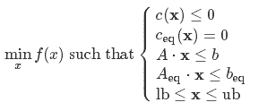
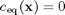
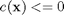
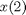
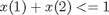
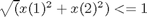
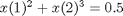

Minimize
Solve constrained optimization problems, globally or locally.
Contents
Equation
Finds the minimum of a problem specified by

Syntax
sol = minimize(func, x0) sol = minimize(..., x0, A, b) sol = minimize(..., b, Aeq, beq) sol = minimize(..., beq, lb, ub) sol = minimize(..., ub, nonlcon) sol = minimize(..., nonlcon, options)
[sol, fval] = minimize(func, ...) [sol, fval, exitflag] = minimize(func, ...) [sol, fval, exitflag, output] = minimize(func, ...) [sol, fval, exitflag, output, grad] = minimize(func, ...) [sol, fval, exitflag, output, gradient, hessian] = minimize(func, ...)
Input arguments
fun, x0
The objective function and initial value; see fminsearch.
Leave the initial value x0 empty to optimize the objective function globally.
A, b (optional)
Linear inequality constraint array and right hand side vector. This linear constraint forces the solution vector to satisfy
Note that in case x is a matrix (this is true when x0 is a matrix), the argument b must have corresponding size size(A,1) × size(x0,2), since the same equation is used to evaluate this constraint.
Aeq, beq (optional)
Linear equality constraint array and right hand side vector. This linear constraint forces the solution vector to satisfy
Note that in case x is a matrix (this is true when x0 is a matrix), the argument beq must have corresponding size size(Aeq,1) × size(x0,2), since the same equation is used to evaluate this constraint.
lb, ub (optional)
lower/upper bound vector or array. Both must have the same size as x0.
If no lower bounds exist for one of the variables, then supply -inf for that variable. Similarly, if no upper bounds exist, supply +inf. If no bounds exist at all, then lb and/or ub may be left empty.
Variables may be fixed in value by setting the corresponding lower and upper bounds to exactly the same value.
nonlcon (optional)
function handle to general nonlinear constraints, inequality and/or equality constraints.
nonlcon must return two vectors, c and ceq, containing the values for the nonlinear inequality constraints c and those for the nonlinear equality constraints ceq at x.
These constraints force the solution to satisfy


where c(x) and ceq(x) are general non-linear functions of x.
options (optional)
an options structure created manually, or with setoptimoptions.
Output arguments
sol, fval
the solution vector and the corresponding function value,
respectively.
exitflag
(See also the help on fminsearch) A flag that specifies the reason the algorithm terminated. fminsearch uses the values:
1 fminsearch converged to a solution x 0 Max. # of function evaluations or iterations exceeded -1 Algorithm was terminated by the output function.
Since minimize() handles constrained problems, the following values were added:
2 Problem overconstrained by either [lb]/[ub] or
[Aeq]/[beq] - nothing done
-2 Problem is infeasible after the optimization (Some or
any of the constraints are violated at the final
solution).
-3 INF or NAN encountered during the optimization.output
(See also the help on fminsearch) A structure that contains additional details on the optimization. fminsearch returns
output.algorithm Algorithm used output.iterations Number of iterations output.message Exit message
In addition, minimize() returns
with non-empty nonlcon argument:
output.ObjfuncCount Number of evaluations of the given
objective function
output.ConstrfuncCount Number of evaluations of the given
non-linear constraint functionWith no or empty nonlcon argument:
output.funcCount Number of function evaluations
For constrained problems, the following fields are also present:
output.constrviolation.lin_ineq output.constrviolation.lin_eq output.constrviolation.nonlin_ineq output.constrviolation.nonlin_eq
All these fields contain a M×2-cell array. The fist column contains a logical index to the constraints, which is true if the constraint was violated, false if it was satisfied. The second column contains the amount of constraint violation. This amount is equal to zero if the constraint was satisfied within options.TolCon.
Examples
rosen = @(x) (1-x(1)).^2 + 105*(x(2)-x(1).^2).^2;
Fully unconstrained problem
minimize(rosen, [3 3])
lower bound constrained
minimize(rosen,[3 3], [],[], [],[], [2 2])
 fixed at
minimize(rosen,[3 3], [],[], [],[], [-inf 3],[inf 3])
simple linear inequality: 
minimize(rosen,[0; 0], [1 1], 1)
nonlinear inequality:  nonlinear equality : 
execute this m-file:
function test_optimize rosen = @(x) (1-x(1)).^2 + 105*(x(2)-x(1).^2).^2; options = setoptimoptions('TolFun', 1e-8, 'TolX', 1e-8); minimize(rosen, [3 3], [],[],[],[],[],[],... @nonlcon, [], options) end function [c, ceq] = nonlcon(x) c = norm(x) - 1; ceq = x(1)^2 + x(2)^3 - 0.5; end
Of course, any combination of the above constraints is also possible.
Notes
- If options is supplied, then TolX will apply to the transformed variables. All other fminsearch parameters should be unaffected.
- Variables which are constrained by both a lower and an upper bound will use a sin() transformation. Those constrained by only a lower or an upper bound will use a quadratic transformation, and unconstrained variables will be left alone.
- Variables may be fixed by setting their respective bounds equal. In this case, the problem will be reduced in size for fminsearch.
- If your problem has an EXCLUSIVE (strict) bound constraints which will not permit evaluation at the bound itself, then you must provide a slightly offset bound. An example of this is a function which contains the log of one of its parameters. If you constrain the variable to have a lower bound of zero, then minimize() may try to evaluate the function exactly at zero.